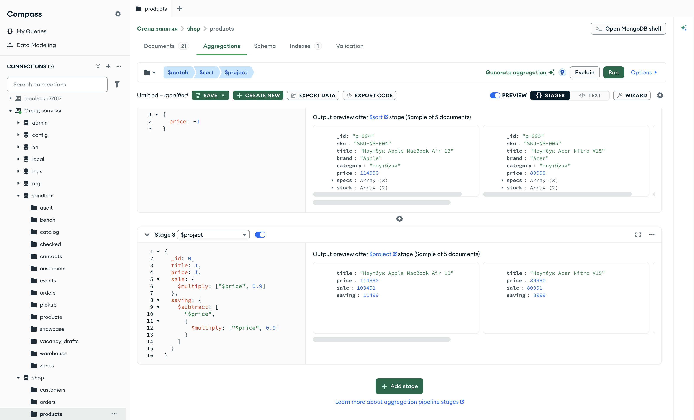

Справочник по MongoDB · модуль 4 · конвейер агрегации
4.2
$project:
форма ответа
В этой главе разобрана стадия $project. Она задаёт форму каждого документа на выходе: какие поля остаются, как они называются и какие поля вычисляются заново. Правила включения и исключения те же, что у проекции find из главы 1.5. Новое — выражения: путь к полю, арифметика, склейка строк и значение по условию.
- Категория
- Агрегация
- Уровень
- Начальный
- Связанные темы
- Проекция (глава 1.5), выражения и $expr (глава 2.8), конвейер, $match, $sort, $limit (глава 4.1)
- Зачем это знать
- Получать из конвейера документы нужной формы: с понятными именами полей и готовыми вычисленными значениями
Как запускать примеры этой главы
mongodb-glava-4.2-python.zip, 64 КБmongodb-glava-4.2-ruby.zip, 64 КБmongodb-glava-4.2-go.zip, 71 КБmongodb-glava-4.2-cpp.zip, 70 КБ — все примеры главы готовыми программами, базы и стенд в Docker. В README.md — запуск в Docker, если Compass нет или он не подключается, и на установленном сервере с Compass, а также что должна напечатать каждая программа.lessons/ch4_2.py — пример вставляется в конец файлаlessons/ch4_2.rb — пример вставляется в конец файлаlessons/ch4_2.go — пример внутрь скобок в конце main, функции и типы — выше mainlessons/ch4_2.cpp — пример внутрь скобок в конце main, функции — выше maincd lessons, затем python ch4_2.pycd lessons, затем python3 ch4_2.py · в Docker: docker compose run --rm python lessons/ch4_2.pycd lessons, затем ruby ch4_2.rb · в Docker: docker compose run --rm ruby lessons/ch4_2.rbcd lessons, затем go run ch4_2.go · в Docker: docker compose run --rm go lessons/ch4_2.gocd lessons, затем g++ -std=c++17 ch4_2.cpp -o prog $(pkg-config --cflags --libs libmongocxx1) && ./prog · в Docker: docker compose run --rm cpp lessons/ch4_2.cpp§1Стадия $project
Конвейеры главы 4.1 возвращали заказы целиком: номер, покупатель, дата, позиции, оплата, доставка. Отчёту обычно нужна часть этих полей. Иногда нужны поля, которых в документе нет, например цена со скидкой. Форму документа на выходе задаёт стадия $project.
Так работает справка из отдела кадров. В личном деле сотрудника десятки граф, а в справку для банка переписывают три: фамилию, должность и стаж. Графу можно назвать в справке иначе, чем в деле. Стаж в деле не записан, его считают по дате приёма. Личное дело не меняется: справка — отдельный лист.
Стадия $project получает каждый документ потока и выпускает документ новой формы. Параметр стадии — документ, в котором перечислены поля результата. Число документов стадия не меняет: сколько пришло, столько и выходит. Документы в коллекции тоже не меняются, новая форма есть только у документов в потоке.
Значение 1 у поля включает его в результат, 0 — исключает. Поле _id входит в результат, пока его не исключили явно. Эти правила совпадают с проекцией метода find из главы 1.5. Пример берёт три самых дорогих заказа в пути, как в главе 4.1, и оставляет у них номер и сумму.
Начиная с этой главы документы печатаются целиком: стадия меняет форму документа, и эту форму видно только в документе целиком.
Цикл for doc in orders.aggregate(pipeline) перебирает документы результата, print(doc) выводит документ как словарь Python.
Блок each { |doc| puts doc.inspect } перебирает документы результата, метод inspect выводит документ как хеш Ruby.
Каждый документ читается в переменную типа bson.D методом cursor.Decode. Функция bson.MarshalExtJSON переводит его в текст JSON. Её первый аргумент false выбирает нестрогую запись, в которой числа выглядят как обычные числа, второй отключает замену символов < и > кодами.
Стадия $project добавляется в конвейер методом pipeline.project, параметр — документ проекции. Функция bsoncxx::to_json переводит документ в текст JSON; режим k_relaxed записывает числа как обычные числа.
pipeline = [
{"$match": {"status": "в пути"}},
{"$sort": {"total": -1}},
{"$limit": 3},
{"$project": {"number": 1, "total": 1}},
]
for doc in orders.aggregate(pipeline):
print(doc)
mongocxx::pipeline pipeline; pipeline.match(make_document(kvp("status", "в пути"))); pipeline.sort(make_document(kvp("total", -1))); pipeline.limit(3); pipeline.project(make_document(kvp("number", 1), kvp("total", 1))); for (auto&& doc : orders.aggregate(pipeline)) { std::cout << bsoncxx::to_json(doc, bsoncxx::ExtendedJsonMode::k_relaxed) << std::endl; }
pipeline := mongo.Pipeline{
{{Key: "$match", Value: bson.D{{Key: "status", Value: "в пути"}}}},
{{Key: "$sort", Value: bson.D{{Key: "total", Value: -1}}}},
{{Key: "$limit", Value: 3}},
{{Key: "$project", Value: bson.D{{Key: "number", Value: 1}, {Key: "total", Value: 1}}}},
}
cursor, _ := orders.Aggregate(ctx, pipeline)
for cursor.Next(ctx) {
var doc bson.D
cursor.Decode(&doc)
out, _ := bson.MarshalExtJSON(doc, false, false)
fmt.Println(string(out))
}
pipeline = [
{ "$match" => { "status" => "в пути" } },
{ "$sort" => { "total" => -1 } },
{ "$limit" => 3 },
{ "$project" => { "number" => 1, "total" => 1 } },
]
orders.aggregate(pipeline).each { |doc| puts doc.inspect }
{'_id': 'o-0028', 'number': '2026-0028', 'total': 244460}
{'_id': 'o-0085', 'number': '2026-0085', 'total': 225320}
{'_id': 'o-0025', 'number': '2026-0025', 'total': 211760}
{ "_id" : "o-0028", "number" : "2026-0028", "total" : 244460 }
{ "_id" : "o-0085", "number" : "2026-0085", "total" : 225320 }
{ "_id" : "o-0025", "number" : "2026-0025", "total" : 211760 }
{"_id":"o-0028","number":"2026-0028","total":244460}
{"_id":"o-0085","number":"2026-0085","total":225320}
{"_id":"o-0025","number":"2026-0025","total":211760}
{"_id"=>"o-0028", "number"=>"2026-0028", "total"=>244460}
{"_id"=>"o-0085", "number"=>"2026-0085", "total"=>225320}
{"_id"=>"o-0025", "number"=>"2026-0025", "total"=>211760}
У каждого заказа три поля: _id, number и total. Поле _id в проекции не указано и всё равно осталось. На схеме — тот же заказ 2026-0028 до стадии $project и после неё.
Зелёным выделены поля, которые попали в результат. Поле _id перешло в результат само, остальные шесть полей стадия не выпустила.
Проекция метода find только выбирает поля. У стадии $project на месте 1 может стоять выражение, и тогда поле в результате вычисляется. Перед выражениями разобран случай, когда нужное поле лежит внутри вложенного документа.
§2Вложенное поле в $project
В анкете адрес записан одной графой: город, улица, дом. Если в справку нужен только город, его переписывают в ту же графу «Адрес», а улицу и дом пропускают. Город доставки лежит в заказе так же — внутри документа delivery. Чтобы оставить только город, поле указывается точечной нотацией: "delivery.city": 1, как в фильтре. Пример убирает _id и оставляет номер, город и сумму.
pipeline = [
{"$match": {"status": "в пути"}},
{"$sort": {"total": -1}},
{"$limit": 3},
{"$project": {"_id": 0, "number": 1, "delivery.city": 1, "total": 1}},
]
for doc in orders.aggregate(pipeline):
print(doc)
mongocxx::pipeline pipeline; pipeline.match(make_document(kvp("status", "в пути"))); pipeline.sort(make_document(kvp("total", -1))); pipeline.limit(3); pipeline.project(make_document( kvp("_id", 0), kvp("number", 1), kvp("delivery.city", 1), kvp("total", 1))); for (auto&& doc : orders.aggregate(pipeline)) { std::cout << bsoncxx::to_json(doc, bsoncxx::ExtendedJsonMode::k_relaxed) << std::endl; }
pipeline := mongo.Pipeline{
{{Key: "$match", Value: bson.D{{Key: "status", Value: "в пути"}}}},
{{Key: "$sort", Value: bson.D{{Key: "total", Value: -1}}}},
{{Key: "$limit", Value: 3}},
{{Key: "$project", Value: bson.D{
{Key: "_id", Value: 0},
{Key: "number", Value: 1},
{Key: "delivery.city", Value: 1},
{Key: "total", Value: 1}}}},
}
cursor, _ := orders.Aggregate(ctx, pipeline)
for cursor.Next(ctx) {
var doc bson.D
cursor.Decode(&doc)
out, _ := bson.MarshalExtJSON(doc, false, false)
fmt.Println(string(out))
}
pipeline = [
{ "$match" => { "status" => "в пути" } },
{ "$sort" => { "total" => -1 } },
{ "$limit" => 3 },
{ "$project" => { "_id" => 0, "number" => 1, "delivery.city" => 1, "total" => 1 } },
]
orders.aggregate(pipeline).each { |doc| puts doc.inspect }
{'number': '2026-0028', 'total': 244460, 'delivery': {'city': 'Екатеринбург'}}
{'number': '2026-0085', 'total': 225320, 'delivery': {'city': 'Новосибирск'}}
{'number': '2026-0025', 'total': 211760, 'delivery': {'city': 'Екатеринбург'}}
{ "number" : "2026-0028", "total" : 244460, "delivery" : { "city" : "Екатеринбург" } }
{ "number" : "2026-0085", "total" : 225320, "delivery" : { "city" : "Новосибирск" } }
{ "number" : "2026-0025", "total" : 211760, "delivery" : { "city" : "Екатеринбург" } }
{"number":"2026-0028","total":244460,"delivery":{"city":"Екатеринбург"}}
{"number":"2026-0085","total":225320,"delivery":{"city":"Новосибирск"}}
{"number":"2026-0025","total":211760,"delivery":{"city":"Екатеринбург"}}
{"number"=>"2026-0028", "total"=>244460, "delivery"=>{"city"=>"Екатеринбург"}}
{"number"=>"2026-0085", "total"=>225320, "delivery"=>{"city"=>"Новосибирск"}}
{"number"=>"2026-0025", "total"=>211760, "delivery"=>{"city"=>"Екатеринбург"}}
Город остался внутри документа delivery: вложенность сохраняется, из delivery выпали только поля type и days. Поле _id исчезло, потому что в проекции стоит "_id": 0.
Порядок полей в результате совпадает с порядком в документе. В проекции delivery.city стоит перед total, а в результате total идёт раньше: в документе заказа поле total записано до delivery. Порядок перечисления в проекции на порядок включённых полей не влияет.
Зелёным выделены поля, которые попали в результат. Поля идут в порядке документа: number, total, затем delivery. Внутри delivery остался только city.
Чтобы вынести город на верхний уровень и назвать его иначе, нужна запись другого вида: на месте 1 ставится путь к полю.
§3Новое имя поля и путь к полю
В электронной таблице формула =B2 в ячейке берёт значение из ячейки B2. Новая ячейка может стоять в другом столбце и под другим заголовком, а значение у неё то же. В выражениях MongoDB ту же роль играет путь к полю.
Путь к полю — строка, которая начинается со знака $ и называет поле текущего документа: "$number" — номер заказа, "$delivery.city" — город доставки. Такая запись уже встречалась в выражениях $expr (глава 2.8). В стадии $project запись "order": "$number" означает: в результате будет поле order, его значение — значение поля number.
Пример даёт трём заказам поля с новыми именами: order, city и sum.
pipeline = [
{"$match": {"status": "в пути"}},
{"$sort": {"total": -1}},
{"$limit": 3},
{"$project": {
"_id": 0,
"order": "$number",
"city": "$delivery.city",
"sum": "$total",
}},
]
for doc in orders.aggregate(pipeline):
print(doc)
mongocxx::pipeline pipeline; pipeline.match(make_document(kvp("status", "в пути"))); pipeline.sort(make_document(kvp("total", -1))); pipeline.limit(3); pipeline.project(make_document( kvp("_id", 0), kvp("order", "$number"), kvp("city", "$delivery.city"), kvp("sum", "$total"))); for (auto&& doc : orders.aggregate(pipeline)) { std::cout << bsoncxx::to_json(doc, bsoncxx::ExtendedJsonMode::k_relaxed) << std::endl; }
pipeline := mongo.Pipeline{
{{Key: "$match", Value: bson.D{{Key: "status", Value: "в пути"}}}},
{{Key: "$sort", Value: bson.D{{Key: "total", Value: -1}}}},
{{Key: "$limit", Value: 3}},
{{Key: "$project", Value: bson.D{
{Key: "_id", Value: 0},
{Key: "order", Value: "$number"},
{Key: "city", Value: "$delivery.city"},
{Key: "sum", Value: "$total"}}}},
}
cursor, _ := orders.Aggregate(ctx, pipeline)
for cursor.Next(ctx) {
var doc bson.D
cursor.Decode(&doc)
out, _ := bson.MarshalExtJSON(doc, false, false)
fmt.Println(string(out))
}
pipeline = [
{ "$match" => { "status" => "в пути" } },
{ "$sort" => { "total" => -1 } },
{ "$limit" => 3 },
{ "$project" => {
"_id" => 0,
"order" => "$number",
"city" => "$delivery.city",
"sum" => "$total",
} },
]
orders.aggregate(pipeline).each { |doc| puts doc.inspect }
{'order': '2026-0028', 'city': 'Екатеринбург', 'sum': 244460}
{'order': '2026-0085', 'city': 'Новосибирск', 'sum': 225320}
{'order': '2026-0025', 'city': 'Екатеринбург', 'sum': 211760}
{ "order" : "2026-0028", "city" : "Екатеринбург", "sum" : 244460 }
{ "order" : "2026-0085", "city" : "Новосибирск", "sum" : 225320 }
{ "order" : "2026-0025", "city" : "Екатеринбург", "sum" : 211760 }
{"order":"2026-0028","city":"Екатеринбург","sum":244460}
{"order":"2026-0085","city":"Новосибирск","sum":225320}
{"order":"2026-0025","city":"Екатеринбург","sum":211760}
{"order"=>"2026-0028", "city"=>"Екатеринбург", "sum"=>244460}
{"order"=>"2026-0085", "city"=>"Новосибирск", "sum"=>225320}
{"order"=>"2026-0025", "city"=>"Екатеринбург", "sum"=>211760}
У каждого заказа три поля верхнего уровня. Город поднялся из delivery наверх, документа delivery в результате нет. Здесь порядок полей совпал с проекцией. Все три поля новые, а новые поля стадия добавляет в том порядке, в каком они перечислены. Включённые значением 1 поля, как в §2, идут в порядке документа.
- number: "2026-0028"
- delivery.city: "Екатеринбург"
- total: 244460
- "order": "$number"
- "city": "$delivery.city"
- "sum": "$total"
- order: "2026-0028"
- city: "Екатеринбург"
- sum: 244460
Строки читаются слева направо: значение поля документа, путь в проекции, новое поле результата. Слева от двоеточия в проекции — имя нового поля, справа — откуда взять значение.
Знак $ обязателен. Строка "delivery.city" без него — обычный текст, и у каждого заказа в поле city окажется слово «delivery.city». Путь к полю может стоять и внутри вычисления, и с этого начинается следующий раздел.
§4Вычисляемые поля
На ценнике в магазине во время распродажи пишут две цены: старую и новую, со скидкой. Новую цену на складе не хранят, её считают из старой. В $project такое поле записывается выражением.
Выражение — документ, в котором имя поля — оператор вычисления, а значение — список аргументов. Выражение {"$multiply": ["$price", 0.9]} умножает цену товара на 0,9. Аргументом может быть путь к полю, число или другое выражение. Оператор $subtract из главы 2.8 вычитает второй аргумент из первого, $multiply перемножает аргументы, $divide делит первый на второй, $add складывает.
Пример считает для ноутбуков цену со скидкой 10 % и размер скидки. Размер скидки — разность цены и цены со скидкой, поэтому внутри $subtract стоит ещё одно выражение $multiply.
pipeline = [
{"$match": {"category": "ноутбуки"}},
{"$sort": {"price": -1}},
{"$project": {
"_id": 0,
"title": 1,
"price": 1,
"sale": {"$multiply": ["$price", 0.9]},
"saving": {"$subtract": ["$price", {"$multiply": ["$price", 0.9]}]},
}},
]
for doc in products.aggregate(pipeline):
print(doc)
mongocxx::pipeline pipeline; pipeline.match(make_document(kvp("category", "ноутбуки"))); pipeline.sort(make_document(kvp("price", -1))); pipeline.project(make_document( kvp("_id", 0), kvp("title", 1), kvp("price", 1), kvp("sale", make_document(kvp("$multiply", make_array("$price", 0.9)))), kvp("saving", make_document( kvp("$subtract", make_array( "$price", make_document(kvp("$multiply", make_array("$price", 0.9))))))))); for (auto&& doc : products.aggregate(pipeline)) { std::cout << bsoncxx::to_json(doc, bsoncxx::ExtendedJsonMode::k_relaxed) << std::endl; }
pipeline := mongo.Pipeline{
{{Key: "$match", Value: bson.D{{Key: "category", Value: "ноутбуки"}}}},
{{Key: "$sort", Value: bson.D{{Key: "price", Value: -1}}}},
{{Key: "$project", Value: bson.D{
{Key: "_id", Value: 0},
{Key: "title", Value: 1},
{Key: "price", Value: 1},
{Key: "sale", Value: bson.D{{Key: "$multiply", Value: bson.A{"$price", 0.9}}}},
{Key: "saving", Value: bson.D{
{Key: "$subtract", Value: bson.A{
"$price",
bson.D{{Key: "$multiply", Value: bson.A{"$price", 0.9}}}}}}}}}},
}
cursor, _ := products.Aggregate(ctx, pipeline)
for cursor.Next(ctx) {
var doc bson.D
cursor.Decode(&doc)
out, _ := bson.MarshalExtJSON(doc, false, false)
fmt.Println(string(out))
}
pipeline = [
{ "$match" => { "category" => "ноутбуки" } },
{ "$sort" => { "price" => -1 } },
{ "$project" => {
"_id" => 0,
"title" => 1,
"price" => 1,
"sale" => { "$multiply" => ["$price", 0.9] },
"saving" => { "$subtract" => ["$price", { "$multiply" => ["$price", 0.9] }] },
} },
]
products.aggregate(pipeline).each { |doc| puts doc.inspect }
{'title': 'Ноутбук Apple MacBook Air 13', 'price': 114990, 'sale': 103491.0, 'saving': 11499.0}
{'title': 'Ноутбук Acer Nitro V15', 'price': 89990, 'sale': 80991.0, 'saving': 8999.0}
{'title': 'Ноутбук HP Pavilion 14', 'price': 67900, 'sale': 61110.0, 'saving': 6790.0}
{'title': 'Ноутбук ASUS VivoBook 15', 'price': 51490, 'sale': 46341.0, 'saving': 5149.0}
{'title': 'Ноутбук Lenovo IdeaPad 3', 'price': 42990, 'sale': 38691.0, 'saving': 4299.0}
{ "title" : "Ноутбук Apple MacBook Air 13", "price" : 114990, "sale" : 103491.0, "saving" : 11499.0 }
{ "title" : "Ноутбук Acer Nitro V15", "price" : 89990, "sale" : 80991.0, "saving" : 8999.0 }
{ "title" : "Ноутбук HP Pavilion 14", "price" : 67900, "sale" : 61110.0, "saving" : 6790.0 }
{ "title" : "Ноутбук ASUS VivoBook 15", "price" : 51490, "sale" : 46341.0, "saving" : 5149.0 }
{ "title" : "Ноутбук Lenovo IdeaPad 3", "price" : 42990, "sale" : 38691.0, "saving" : 4299.0 }
{"title":"Ноутбук Apple MacBook Air 13","price":114990,"sale":103491.0,"saving":11499.0}
{"title":"Ноутбук Acer Nitro V15","price":89990,"sale":80991.0,"saving":8999.0}
{"title":"Ноутбук HP Pavilion 14","price":67900,"sale":61110.0,"saving":6790.0}
{"title":"Ноутбук ASUS VivoBook 15","price":51490,"sale":46341.0,"saving":5149.0}
{"title":"Ноутбук Lenovo IdeaPad 3","price":42990,"sale":38691.0,"saving":4299.0}
{"title"=>"Ноутбук Apple MacBook Air 13", "price"=>114990, "sale"=>103491.0, "saving"=>11499.0}
{"title"=>"Ноутбук Acer Nitro V15", "price"=>89990, "sale"=>80991.0, "saving"=>8999.0}
{"title"=>"Ноутбук HP Pavilion 14", "price"=>67900, "sale"=>61110.0, "saving"=>6790.0}
{"title"=>"Ноутбук ASUS VivoBook 15", "price"=>51490, "sale"=>46341.0, "saving"=>5149.0}
{"title"=>"Ноутбук Lenovo IdeaPad 3", "price"=>42990, "sale"=>38691.0, "saving"=>4299.0}
Для каждого ноутбука сервер посчитал оба поля. Вложенное выражение вычисляется изнутри наружу: сначала внутреннее $multiply, затем внешнее $subtract. На схеме — вычисление для самого дорогого ноутбука.
Блоки идут в порядке вычисления. Значение sale считается отдельно тем же $multiply: выражение одного поля не может сослаться на поле, которое вычисляет та же стадия.
Оба вычисленных поля в выводе записаны дробными числами. Умножение на 0,9 даёт тип double, даже когда результат целый. Разность с таким числом — тоже double. Цены в документах — целые числа.
Числа складываются и умножаются, а для строк нужен свой оператор.
§5Склейка строк: $concat и $toString
Номер заказа на наклейке посылки часто печатают вместе с суммой и городом в одну строку. Такую строку в $project собирает оператор $concat. Он склеивает свои аргументы по порядку: {"$concat": ["$delivery.city", ", ", "$delivery.type"]} даёт «Екатеринбург, пункт выдачи».
Аргументы $concat должны быть строками. Сумма заказа — число, и склеить её с номером напрямую нельзя. Оператор $toString переводит значение в строку: {"$toString": "$total"} даёт «244460». Пример сначала пробует склеить номер и сумму без перевода, затем с ним.
Ошибку сервера PyMongo выбрасывает исключением OperationFailure: код лежит в e.code, текст — в e.details["errmsg"]. Класс исключения импортируется из pymongo.errors.
Ошибку сервера драйвер выбрасывает исключением Mongo::Error::OperationFailure: код лежит в e.code, текст — в e.document["errmsg"].
Метод Aggregate возвращает ошибку вторым значением. Функция errors.As проверяет, что это ошибка команды сервера, и кладёт её в переменную ce типа mongo.CommandError: код — ce.Code, текст — ce.Message.
Ошибку сервера драйвер выбрасывает исключением mongocxx::operation_exception: код — e.code().value(), текст — e.what(). К тексту сервера драйвер дописывает «: server error code … : generic server error».
from pymongo.errors import OperationFailure with_number = [ {"$match": {"status": "в пути"}}, {"$sort": {"total": -1}}, {"$limit": 3}, {"$project": {"_id": 0, "line": {"$concat": ["$number", " — ", "$total"]}}}, ] with_string = [ {"$match": {"status": "в пути"}}, {"$sort": {"total": -1}}, {"$limit": 3}, {"$project": { "_id": 0, "line": {"$concat": ["$number", " — ", {"$toString": "$total"}, " ₽"]}, }}, ] print("── $concat с числом") try: for doc in orders.aggregate(with_number): print(doc) except OperationFailure as e: print("код", e.code) print(e.details["errmsg"]) print("── $concat с $toString") for doc in orders.aggregate(with_string): print(doc)
mongocxx::pipeline with_number; with_number.match(make_document(kvp("status", "в пути"))); with_number.sort(make_document(kvp("total", -1))); with_number.limit(3); with_number.project(make_document( kvp("_id", 0), kvp("line", make_document(kvp("$concat", make_array("$number", " — ", "$total")))))); mongocxx::pipeline with_string; with_string.match(make_document(kvp("status", "в пути"))); with_string.sort(make_document(kvp("total", -1))); with_string.limit(3); with_string.project(make_document( kvp("_id", 0), kvp("line", make_document( kvp("$concat", make_array("$number", " — ", make_document(kvp("$toString", "$total")), " ₽")))))); std::cout << "── $concat с числом" << std::endl; try { for (auto&& doc : orders.aggregate(with_number)) { std::cout << bsoncxx::to_json(doc) << std::endl; } } catch (const mongocxx::operation_exception& e) { std::cout << "код " << e.code().value() << std::endl; std::cout << e.what() << std::endl; } std::cout << "── $concat с $toString" << std::endl; for (auto&& doc : orders.aggregate(with_string)) { std::cout << bsoncxx::to_json(doc, bsoncxx::ExtendedJsonMode::k_relaxed) << std::endl; }
withNumber := mongo.Pipeline{
{{Key: "$match", Value: bson.D{{Key: "status", Value: "в пути"}}}},
{{Key: "$sort", Value: bson.D{{Key: "total", Value: -1}}}},
{{Key: "$limit", Value: 3}},
{{Key: "$project", Value: bson.D{
{Key: "_id", Value: 0},
{Key: "line", Value: bson.D{{Key: "$concat", Value: bson.A{"$number", " — ", "$total"}}}}}}},
}
withString := mongo.Pipeline{
{{Key: "$match", Value: bson.D{{Key: "status", Value: "в пути"}}}},
{{Key: "$sort", Value: bson.D{{Key: "total", Value: -1}}}},
{{Key: "$limit", Value: 3}},
{{Key: "$project", Value: bson.D{
{Key: "_id", Value: 0},
{Key: "line", Value: bson.D{
{Key: "$concat", Value: bson.A{
"$number",
" — ",
bson.D{{Key: "$toString", Value: "$total"}},
" ₽"}}}}}}},
}
fmt.Println("── $concat с числом")
_, err := orders.Aggregate(ctx, withNumber)
var ce mongo.CommandError
if errors.As(err, &ce) {
fmt.Println("код", ce.Code)
fmt.Println(ce.Message)
}
fmt.Println("── $concat с $toString")
cursor, _ := orders.Aggregate(ctx, withString)
for cursor.Next(ctx) {
var doc bson.D
cursor.Decode(&doc)
out, _ := bson.MarshalExtJSON(doc, false, false)
fmt.Println(string(out))
}
with_number = [
{ "$match" => { "status" => "в пути" } },
{ "$sort" => { "total" => -1 } },
{ "$limit" => 3 },
{ "$project" => {
"_id" => 0,
"line" => { "$concat" => ["$number", " — ", "$total"] },
} },
]
with_string = [
{ "$match" => { "status" => "в пути" } },
{ "$sort" => { "total" => -1 } },
{ "$limit" => 3 },
{ "$project" => {
"_id" => 0,
"line" => { "$concat" => ["$number", " — ", { "$toString" => "$total" }, " ₽"] },
} },
]
puts "── $concat с числом"
begin
orders.aggregate(with_number).each { |doc| puts doc.inspect }
rescue Mongo::Error::OperationFailure => e
puts "код #{e.code}"
puts e.document["errmsg"]
end
puts "── $concat с $toString"
orders.aggregate(with_string).each { |doc| puts doc.inspect }
── $concat с числом
код 16702
PlanExecutor error during aggregation :: caused by :: $concat only supports strings, not int
── $concat с $toString
{'line': '2026-0028 — 244460 ₽'}
{'line': '2026-0085 — 225320 ₽'}
{'line': '2026-0025 — 211760 ₽'}
── $concat с числом
код 16702
PlanExecutor error during aggregation :: caused by :: $concat only supports strings, not int: server error code 16702: generic server error
── $concat с $toString
{ "line" : "2026-0028 — 244460 ₽" }
{ "line" : "2026-0085 — 225320 ₽" }
{ "line" : "2026-0025 — 211760 ₽" }
── $concat с числом
код 16702
PlanExecutor error during aggregation :: caused by :: $concat only supports strings, not int
── $concat с $toString
{"line":"2026-0028 — 244460 ₽"}
{"line":"2026-0085 — 225320 ₽"}
{"line":"2026-0025 — 211760 ₽"}
── $concat с числом
код 16702
PlanExecutor error during aggregation :: caused by :: $concat only supports strings, not int
── $concat с $toString
{"line"=>"2026-0028 — 244460 ₽"}
{"line"=>"2026-0085 — 225320 ₽"}
{"line"=>"2026-0025 — 211760 ₽"}
Первый конвейер сервер не выполнил: ошибка 16702, «$concat поддерживает только строки, а получил int». Во втором конвейере сумма переведена в строку, и у трёх заказов получилась строка вида «2026-0028 — 244460 ₽».
Зелёные аргументы — строки, красный — число. Один нестроковый аргумент останавливает весь конвейер с ошибкой, ни одного документа программа не получает.
Следующий оператор выбирает значение поля в зависимости от условия.
§6Значение по условию: $cond
В электронной таблице формула ЕСЛИ(B2>=50000; "дорогой"; "доступный") пишет в ячейку одно из двух слов в зависимости от цены. В выражениях MongoDB то же делает оператор $cond.
У $cond три части: if — условие, then — значение, когда условие истинно, else — значение, когда ложно. Условие записывается выражением сравнения из главы 2.8: {"$gte": ["$price", 50000]} — «цена не меньше 50 000». Пример делит ноутбуки и смартфоны на дорогие и доступные.
pipeline = [
{"$match": {"category": {"$in": ["ноутбуки", "смартфоны"]}}},
{"$sort": {"price": -1}},
{"$project": {
"_id": 0,
"title": 1,
"price": 1,
"segment": {"$cond": {
"if": {"$gte": ["$price", 50000]},
"then": "дорогой",
"else": "доступный",
}},
}},
]
for doc in products.aggregate(pipeline):
print(doc)
mongocxx::pipeline pipeline; pipeline.match(make_document( kvp("category", make_document(kvp("$in", make_array("ноутбуки", "смартфоны")))))); pipeline.sort(make_document(kvp("price", -1))); pipeline.project(make_document( kvp("_id", 0), kvp("title", 1), kvp("price", 1), kvp("segment", make_document( kvp("$cond", make_document( kvp("if", make_document(kvp("$gte", make_array("$price", 50000)))), kvp("then", "дорогой"), kvp("else", "доступный"))))))); for (auto&& doc : products.aggregate(pipeline)) { std::cout << bsoncxx::to_json(doc, bsoncxx::ExtendedJsonMode::k_relaxed) << std::endl; }
pipeline := mongo.Pipeline{
{{Key: "$match", Value: bson.D{
{Key: "category", Value: bson.D{{Key: "$in", Value: bson.A{"ноутбуки", "смартфоны"}}}}}}},
{{Key: "$sort", Value: bson.D{{Key: "price", Value: -1}}}},
{{Key: "$project", Value: bson.D{
{Key: "_id", Value: 0},
{Key: "title", Value: 1},
{Key: "price", Value: 1},
{Key: "segment", Value: bson.D{
{Key: "$cond", Value: bson.D{
{Key: "if", Value: bson.D{{Key: "$gte", Value: bson.A{"$price", 50000}}}},
{Key: "then", Value: "дорогой"},
{Key: "else", Value: "доступный"}}}}}}}},
}
cursor, _ := products.Aggregate(ctx, pipeline)
for cursor.Next(ctx) {
var doc bson.D
cursor.Decode(&doc)
out, _ := bson.MarshalExtJSON(doc, false, false)
fmt.Println(string(out))
}
pipeline = [
{ "$match" => { "category" => { "$in" => ["ноутбуки", "смартфоны"] } } },
{ "$sort" => { "price" => -1 } },
{ "$project" => {
"_id" => 0,
"title" => 1,
"price" => 1,
"segment" => { "$cond" => {
"if" => { "$gte" => ["$price", 50000] },
"then" => "дорогой",
"else" => "доступный",
} },
} },
]
products.aggregate(pipeline).each { |doc| puts doc.inspect }
{'title': 'Ноутбук Apple MacBook Air 13', 'price': 114990, 'segment': 'дорогой'}
{'title': 'Ноутбук Acer Nitro V15', 'price': 89990, 'segment': 'дорогой'}
{'title': 'Смартфон Apple iPhone 15', 'price': 79990, 'segment': 'дорогой'}
{'title': 'Ноутбук HP Pavilion 14', 'price': 67900, 'segment': 'дорогой'}
{'title': 'Ноутбук ASUS VivoBook 15', 'price': 51490, 'segment': 'дорогой'}
{'title': 'Ноутбук Lenovo IdeaPad 3', 'price': 42990, 'segment': 'доступный'}
{'title': 'Смартфон Samsung Galaxy A55', 'price': 32990, 'segment': 'доступный'}
{'title': 'Смартфон realme 12 Pro', 'price': 27490, 'segment': 'доступный'}
{'title': 'Смартфон Xiaomi Redmi Note 13', 'price': 18990, 'segment': 'доступный'}
{ "title" : "Ноутбук Apple MacBook Air 13", "price" : 114990, "segment" : "дорогой" }
{ "title" : "Ноутбук Acer Nitro V15", "price" : 89990, "segment" : "дорогой" }
{ "title" : "Смартфон Apple iPhone 15", "price" : 79990, "segment" : "дорогой" }
{ "title" : "Ноутбук HP Pavilion 14", "price" : 67900, "segment" : "дорогой" }
{ "title" : "Ноутбук ASUS VivoBook 15", "price" : 51490, "segment" : "дорогой" }
{ "title" : "Ноутбук Lenovo IdeaPad 3", "price" : 42990, "segment" : "доступный" }
{ "title" : "Смартфон Samsung Galaxy A55", "price" : 32990, "segment" : "доступный" }
{ "title" : "Смартфон realme 12 Pro", "price" : 27490, "segment" : "доступный" }
{ "title" : "Смартфон Xiaomi Redmi Note 13", "price" : 18990, "segment" : "доступный" }
{"title":"Ноутбук Apple MacBook Air 13","price":114990,"segment":"дорогой"}
{"title":"Ноутбук Acer Nitro V15","price":89990,"segment":"дорогой"}
{"title":"Смартфон Apple iPhone 15","price":79990,"segment":"дорогой"}
{"title":"Ноутбук HP Pavilion 14","price":67900,"segment":"дорогой"}
{"title":"Ноутбук ASUS VivoBook 15","price":51490,"segment":"дорогой"}
{"title":"Ноутбук Lenovo IdeaPad 3","price":42990,"segment":"доступный"}
{"title":"Смартфон Samsung Galaxy A55","price":32990,"segment":"доступный"}
{"title":"Смартфон realme 12 Pro","price":27490,"segment":"доступный"}
{"title":"Смартфон Xiaomi Redmi Note 13","price":18990,"segment":"доступный"}
{"title"=>"Ноутбук Apple MacBook Air 13", "price"=>114990, "segment"=>"дорогой"}
{"title"=>"Ноутбук Acer Nitro V15", "price"=>89990, "segment"=>"дорогой"}
{"title"=>"Смартфон Apple iPhone 15", "price"=>79990, "segment"=>"дорогой"}
{"title"=>"Ноутбук HP Pavilion 14", "price"=>67900, "segment"=>"дорогой"}
{"title"=>"Ноутбук ASUS VivoBook 15", "price"=>51490, "segment"=>"дорогой"}
{"title"=>"Ноутбук Lenovo IdeaPad 3", "price"=>42990, "segment"=>"доступный"}
{"title"=>"Смартфон Samsung Galaxy A55", "price"=>32990, "segment"=>"доступный"}
{"title"=>"Смартфон realme 12 Pro", "price"=>27490, "segment"=>"доступный"}
{"title"=>"Смартфон Xiaomi Redmi Note 13", "price"=>18990, "segment"=>"доступный"}
Пять товаров получили сегмент «дорогой», четыре — «доступный». Граница проходит между ASUS VivoBook 15 за 51 490 и Lenovo IdeaPad 3 за 42 990.
- MacBook Air 13 · 114990
- Acer Nitro V15 · 89990
- iPhone 15 · 79990
- HP Pavilion 14 · 67900
- ASUS VivoBook 15 · 51490
- Lenovo IdeaPad 3 · 42990
- Galaxy A55 · 32990
- realme 12 Pro · 27490
- Redmi Note 13 · 18990
Условие {"$gte": ["$price", 50000]} проверяется у каждого товара отдельно. Слева товары, для которых оно истинно, справа — ложно.
Все проекции главы до этого места сервер принимал. Есть сочетания, которые он отклоняет.
§7Какие проекции сервер отклоняет
Список покупок пишут одним из двух способов: что купить или чего не покупать из привычного набора. Если в одном списке есть и то и другое, непонятно, что делать с товарами, которых в списке нет. С проекцией то же самое.
Проекция бывает двух видов. Включающая перечисляет поля, которые остаются: значения 1, пути к полям и выражения. Исключающая перечисляет поля, которые убираются: значения 0. Смешивать виды нельзя, как и в главе 1.5. Единственное исключение — "_id": 0, оно допускается во включающей проекции.
Новое для $project: вычисляемое поле относится к включающей проекции. Исключающую проекцию с выражением сервер тоже отклоняет. Пример пробует оба сочетания.
from pymongo.errors import OperationFailure keep_and_drop = [ {"$match": {"status": "в пути"}}, {"$sort": {"total": -1}}, {"$limit": 3}, {"$project": {"number": 1, "items": 0}}, ] drop_and_compute = [ {"$match": {"status": "в пути"}}, {"$sort": {"total": -1}}, {"$limit": 3}, {"$project": {"items": 0, "sum": "$total"}}, ] print("── number: 1 и items: 0") try: for doc in orders.aggregate(keep_and_drop): print(doc) except OperationFailure as e: print("код", e.code) print(e.details["errmsg"]) print("── items: 0 и новое поле") try: for doc in orders.aggregate(drop_and_compute): print(doc) except OperationFailure as e: print("код", e.code) print(e.details["errmsg"])
mongocxx::pipeline keep_and_drop; keep_and_drop.match(make_document(kvp("status", "в пути"))); keep_and_drop.sort(make_document(kvp("total", -1))); keep_and_drop.limit(3); keep_and_drop.project(make_document(kvp("number", 1), kvp("items", 0))); mongocxx::pipeline drop_and_compute; drop_and_compute.match(make_document(kvp("status", "в пути"))); drop_and_compute.sort(make_document(kvp("total", -1))); drop_and_compute.limit(3); drop_and_compute.project(make_document(kvp("items", 0), kvp("sum", "$total"))); std::cout << "── number: 1 и items: 0" << std::endl; try { for (auto&& doc : orders.aggregate(keep_and_drop)) { std::cout << bsoncxx::to_json(doc) << std::endl; } } catch (const mongocxx::operation_exception& e) { std::cout << "код " << e.code().value() << std::endl; std::cout << e.what() << std::endl; } std::cout << "── items: 0 и новое поле" << std::endl; try { for (auto&& doc : orders.aggregate(drop_and_compute)) { std::cout << bsoncxx::to_json(doc) << std::endl; } } catch (const mongocxx::operation_exception& e) { std::cout << "код " << e.code().value() << std::endl; std::cout << e.what() << std::endl; }
keepAndDrop := mongo.Pipeline{
{{Key: "$match", Value: bson.D{{Key: "status", Value: "в пути"}}}},
{{Key: "$sort", Value: bson.D{{Key: "total", Value: -1}}}},
{{Key: "$limit", Value: 3}},
{{Key: "$project", Value: bson.D{{Key: "number", Value: 1}, {Key: "items", Value: 0}}}},
}
dropAndCompute := mongo.Pipeline{
{{Key: "$match", Value: bson.D{{Key: "status", Value: "в пути"}}}},
{{Key: "$sort", Value: bson.D{{Key: "total", Value: -1}}}},
{{Key: "$limit", Value: 3}},
{{Key: "$project", Value: bson.D{{Key: "items", Value: 0}, {Key: "sum", Value: "$total"}}}},
}
fmt.Println("── number: 1 и items: 0")
_, err := orders.Aggregate(ctx, keepAndDrop)
var ce mongo.CommandError
if errors.As(err, &ce) {
fmt.Println("код", ce.Code)
fmt.Println(ce.Message)
}
fmt.Println("── items: 0 и новое поле")
_, err = orders.Aggregate(ctx, dropAndCompute)
if errors.As(err, &ce) {
fmt.Println("код", ce.Code)
fmt.Println(ce.Message)
}
keep_and_drop = [
{ "$match" => { "status" => "в пути" } },
{ "$sort" => { "total" => -1 } },
{ "$limit" => 3 },
{ "$project" => { "number" => 1, "items" => 0 } },
]
drop_and_compute = [
{ "$match" => { "status" => "в пути" } },
{ "$sort" => { "total" => -1 } },
{ "$limit" => 3 },
{ "$project" => { "items" => 0, "sum" => "$total" } },
]
puts "── number: 1 и items: 0"
begin
orders.aggregate(keep_and_drop).each { |doc| puts doc.inspect }
rescue Mongo::Error::OperationFailure => e
puts "код #{e.code}"
puts e.document["errmsg"]
end
puts "── items: 0 и новое поле"
begin
orders.aggregate(drop_and_compute).each { |doc| puts doc.inspect }
rescue Mongo::Error::OperationFailure => e
puts "код #{e.code}"
puts e.document["errmsg"]
end
── number: 1 и items: 0 код 31254 Invalid $project :: caused by :: Cannot do exclusion on field items in inclusion projection ── items: 0 и новое поле код 31310 Invalid $project :: caused by :: Cannot use an expression sum: "$total" in an exclusion projection
── number: 1 и items: 0 код 31254 Invalid $project :: caused by :: Cannot do exclusion on field items in inclusion projection: server error code 31254: generic server error ── items: 0 и новое поле код 31310 Invalid $project :: caused by :: Cannot use an expression sum: "$total" in an exclusion projection: server error code 31310: generic server error
── number: 1 и items: 0 код 31254 Invalid $project :: caused by :: Cannot do exclusion on field items in inclusion projection ── items: 0 и новое поле код 31310 Invalid $project :: caused by :: Cannot use an expression sum: "$total" in an exclusion projection
── number: 1 и items: 0 код 31254 Invalid $project :: caused by :: Cannot do exclusion on field items in inclusion projection ── items: 0 и новое поле код 31310 Invalid $project :: caused by :: Cannot use an expression sum: "$total" in an exclusion projection
Обе проекции отклонены. Первая — ошибкой 31254: «нельзя исключить поле items во включающей проекции». Вторая — ошибкой 31310: «нельзя использовать выражение sum: "$total" в исключающей проекции».
| Что стоит в проекции | Вид проекции | Ответ сервера |
|---|---|---|
1, пути к полям, выражения, "_id": 0 | включающая | выполняет |
только 0 | исключающая | выполняет |
1 и 0 у разных полей, кроме _id | смешанная | ошибка 31254 |
0 и выражение | смешанная | ошибка 31310 |
Правила вида проекции касаются одной стадии. Следующий раздел — о том, как $project влияет на стадии после себя.
§8Место $project в конвейере
После стадии $project у документов потока остаются только поля проекции. Следующие стадии получают документы уже в новой форме. Если $match стоит после $project и проверяет поле, которое проекция убрала, условию не подходит ни один документ.
Это похоже на справку из §1. По справке для банка нельзя узнать домашний адрес сотрудника, хотя в личном деле он записан: в справку его не переписали.
Пример строит два конвейера из одних и тех же стадий: в первом проекция стоит до отбора по статусу, во втором — после.
project_first = [
{"$project": {"number": 1, "total": 1}},
{"$match": {"status": "в пути"}},
]
match_first = [
{"$match": {"status": "в пути"}},
{"$project": {"number": 1, "total": 1}},
]
print("$project до $match:", len(list(orders.aggregate(project_first))))
print("$match до $project:", len(list(orders.aggregate(match_first))))
mongocxx::pipeline project_first; project_first.project(make_document(kvp("number", 1), kvp("total", 1))); project_first.match(make_document(kvp("status", "в пути"))); mongocxx::pipeline match_first; match_first.match(make_document(kvp("status", "в пути"))); match_first.project(make_document(kvp("number", 1), kvp("total", 1))); auto cursor = orders.aggregate(project_first); std::cout << "$project до $match: " << std::distance(cursor.begin(), cursor.end()) << std::endl; auto cursor2 = orders.aggregate(match_first); std::cout << "$match до $project: " << std::distance(cursor2.begin(), cursor2.end()) << std::endl;
projectFirst := mongo.Pipeline{
{{Key: "$project", Value: bson.D{{Key: "number", Value: 1}, {Key: "total", Value: 1}}}},
{{Key: "$match", Value: bson.D{{Key: "status", Value: "в пути"}}}},
}
matchFirst := mongo.Pipeline{
{{Key: "$match", Value: bson.D{{Key: "status", Value: "в пути"}}}},
{{Key: "$project", Value: bson.D{{Key: "number", Value: 1}, {Key: "total", Value: 1}}}},
}
cursor, _ := orders.Aggregate(ctx, projectFirst)
var docs []bson.D
cursor.All(ctx, &docs)
fmt.Println("$project до $match:", len(docs))
cursor, _ = orders.Aggregate(ctx, matchFirst)
docs = nil
cursor.All(ctx, &docs)
fmt.Println("$match до $project:", len(docs))
project_first = [
{ "$project" => { "number" => 1, "total" => 1 } },
{ "$match" => { "status" => "в пути" } },
]
match_first = [
{ "$match" => { "status" => "в пути" } },
{ "$project" => { "number" => 1, "total" => 1 } },
]
puts "$project до $match: #{orders.aggregate(project_first).to_a.size}"
puts "$match до $project: #{orders.aggregate(match_first).to_a.size}"
$project до $match: 0 $match до $project: 13
$project до $match: 0 $match до $project: 13
$project до $match: 0 $match до $project: 13
$project до $match: 0 $match до $project: 13
Первый конвейер не нашёл ни одного заказа, второй нашёл 13. В первом стадия $match получила документы из трёх полей — _id, number и total. Поля status в них нет, и условие {"status": "в пути"} не выполнилось ни разу.
_id, number, total120 документовstatus — поля нет0 документовstatus в полном заказе13 документов_id, number, total13 документовЧисла — из вывода примера. $project не меняет число документов: на выходе столько же, сколько на входе.
Поэтому $project обычно ставят в конце конвейера, когда отбор и сортировка уже выполнены. Если проекция нужна раньше, в ней оставляют поля, которые понадобятся следующим стадиям.
Все конвейеры главы можно собрать и в Compass.
§9$project в Compass
Стадия $project в Compass собирается так же, как стадии главы 4.1. На вкладке Aggregations в режиме Stages у карточки выбирается оператор $project, а в поле параметров записывается проекция. На кадре — конвейер из §4: отбор ноутбуков, сортировка по цене и проекция с ценой со скидкой.

$sort и $project конвейера из §4Выборки двух соседних стадий показывают, что делает проекция. После $sort у товара все поля: артикул, бренд, характеристики, склады. После $project остались четыре поля, два из них вычислены. В выборке Compass значение sale записано как 103491, а программы из примера печатают 103491.0. Тип значения тот же, double: Compass не выводит нулевую дробную часть.
§10Частые ошибки
| Что написано | Что происходит | Как правильно |
|---|---|---|
{"number": 1, "items": 0} | Ошибка 31254: в одной проекции включение и исключение полей | Перечислить только нужные поля; во включающей проекции исключать можно только _id |
{"items": 0, "sum": "$total"} | Ошибка 31310: новое поле в исключающей проекции | Новые поля — только во включающей проекции: перечислить нужные поля и добавить новое |
{"city": "delivery.city"} | Без знака $ строка — значение: у всех документов city равно тексту «delivery.city» | Путь к полю начинается с $: "$delivery.city" |
{"$concat": ["$number", " — ", "$total"]} | Ошибка 16702: $concat склеивает только строки, а total — число | Перевести число в строку: {"$toString": "$total"} |
$project перед $match по убранному полю | Поля status после проекции нет, условию не подходит ни один документ: 0 | Сначала $match, затем $project; или оставить в проекции поля, нужные следующим стадиям |
| Что написано | Что происходит | Как правильно |
|---|---|---|
{"number": 1, "items": 0} | Ошибка 31254: в одной проекции включение и исключение полей | Перечислить только нужные поля; во включающей проекции исключать можно только _id |
{"items": 0, "sum": "$total"} | Ошибка 31310: новое поле в исключающей проекции | Новые поля — только во включающей проекции: перечислить нужные поля и добавить новое |
{"city": "delivery.city"} | Без знака $ строка — значение: у всех документов city равно тексту «delivery.city» | Путь к полю начинается с $: "$delivery.city" |
{"$concat": ["$number", " — ", "$total"]} | Ошибка 16702: $concat склеивает только строки, а total — число | Перевести число в строку: {"$toString": "$total"} |
$project перед $match по убранному полю | Поля status после проекции нет, условию не подходит ни один документ: 0 | Сначала $match, затем $project; или оставить в проекции поля, нужные следующим стадиям |
| Что написано | Что происходит | Как правильно |
|---|---|---|
{"number": 1, "items": 0} | Ошибка 31254: в одной проекции включение и исключение полей | Перечислить только нужные поля; во включающей проекции исключать можно только _id |
{"items": 0, "sum": "$total"} | Ошибка 31310: новое поле в исключающей проекции | Новые поля — только во включающей проекции: перечислить нужные поля и добавить новое |
{"city": "delivery.city"} | Без знака $ строка — значение: у всех документов city равно тексту «delivery.city» | Путь к полю начинается с $: "$delivery.city" |
{"$concat": ["$number", " — ", "$total"]} | Ошибка 16702: $concat склеивает только строки, а total — число | Перевести число в строку: {"$toString": "$total"} |
$project перед $match по убранному полю | Поля status после проекции нет, условию не подходит ни один документ: 0 | Сначала $match, затем $project; или оставить в проекции поля, нужные следующим стадиям |
| Что написано | Что происходит | Как правильно |
|---|---|---|
{"number": 1, "items": 0} | Ошибка 31254: в одной проекции включение и исключение полей | Перечислить только нужные поля; во включающей проекции исключать можно только _id |
{"items": 0, "sum": "$total"} | Ошибка 31310: новое поле в исключающей проекции | Новые поля — только во включающей проекции: перечислить нужные поля и добавить новое |
{"city": "delivery.city"} | Без знака $ строка — значение: у всех документов city равно тексту «delivery.city» | Путь к полю начинается с $: "$delivery.city" |
{"$concat": ["$number", " — ", "$total"]} | Ошибка 16702: $concat склеивает только строки, а total — число | Перевести число в строку: {"$toString": "$total"} |
$project перед $match по убранному полю | Поля status после проекции нет, условию не подходит ни один документ: 0 | Сначала $match, затем $project; или оставить в проекции поля, нужные следующим стадиям |
§11Проверьте себя
Проекция {"number": 1, "total": 1} вернула три поля. Какое третье и почему?
_id. Он входит в результат, пока его не исключили явно значением "_id": 0.
Чем "city": "$delivery.city" отличается от "delivery.city": 1?
Первая запись создаёт поле city на верхнем уровне со значением города. Вторая оставляет город внутри документа delivery.
Что окажется в поле city при проекции {"city": "delivery.city"}?
Текст «delivery.city» у каждого документа. Без знака $ строка — обычное значение.
Почему {"$concat": ["$number", " — ", "$total"]} даёт ошибку и как её исправить?
$concat склеивает только строки, а total — число: ошибка 16702. Число переводится в строку оператором {"$toString": "$total"}.
Конвейер [$project {number, total}, $match {status: "в пути"}] вернул 0 документов. Почему?
Проекция убрала поле status, и стадия $match получила документы без него. $match нужно поставить перед $project.
§12Самостоятельная работа
Работа выполняется на языке, выбранном в шапке главы, в заготовке lessons/ch4_2. Данные — shop.orders, глава их не меняет.
- ОтборПять самых дорогих доставленных заказов: стадии
$match,$sortпо сумме по убыванию и$limit5. - Форма ответаДобавить
$project: без_id, номер заказа, город доставки в полеcityна верхнем уровне, способ оплаты в полеpaid_by. - Срок доставкиДобавить поле
speed: «быстро», еслиdelivery.daysне больше 2, иначе «долго». - Строка для наклейкиДобавить поле
labelвида «2026-0009 · 320740 ₽».
Ответ для самопроверки
Конвейер: {"$match": {"status": "доставлен"}}, {"$sort": {"total": -1}}, {"$limit": 5} и проекция {"_id": 0, "number": 1, "city": "$delivery.city", "paid_by": "$payment.method", "speed": {"$cond": {"if": {"$lte": ["$delivery.days", 2]}, "then": "быстро", "else": "долго"}}, "label": {"$concat": ["$number", " · ", {"$toString": "$total"}, " ₽"]}}. Результат — пять заказов: 2026-0115 (Ярославль, карта, долго, 392660 ₽), 2026-0091 (Новосибирск, картой при получении, быстро, 354960 ₽), 2026-0036 (Новосибирск, СБП, долго, 354460 ₽), 2026-0052 (Ярославль, карта, долго, 344970 ₽), 2026-0009 (Санкт-Петербург, карта, быстро, 320740 ₽).
§13Шпаргалка
{"$project": {"_id": 0, "number": 1, "total": 1}}
{"$project": {"order": "$number", "city": "$delivery.city"}}
{"sale": {"$multiply": ["$price", 0.9]}}
{"line": {"$concat": ["$number", " — ", {"$toString": "$total"}]}}
{"$cond": {"if": {"$gte": ["$price", 50000]}, "then": "дорогой", "else": "доступный"}}
pipeline.append({"$project": {...}})
pipeline.project(make_document(kvp("_id", 0), kvp("number", 1), kvp("total", 1)));
pipeline.project(make_document(kvp("order", "$number"), kvp("city", "$delivery.city")));
make_document(kvp("sale", make_document(kvp("$multiply", make_array("$price", 0.9)))))
make_document(kvp("line", make_document(kvp("$concat", make_array("$number", " — ", make_document(kvp("$toString", "$total")))))))
make_document(kvp("$cond", make_document(kvp("if", make_document(kvp("$gte", make_array("$price", 50000)))), kvp("then", "дорогой"), kvp("else", "доступный"))))
pipeline.project(make_document(kvp("number", 1)));
bson.D{{Key: "$project", Value: bson.D{{Key: "_id", Value: 0}, {Key: "number", Value: 1}, {Key: "total", Value: 1}}}}
bson.D{{Key: "$project", Value: bson.D{{Key: "order", Value: "$number"}, {Key: "city", Value: "$delivery.city"}}}}
bson.D{{Key: "sale", Value: bson.D{{Key: "$multiply", Value: bson.A{"$price", 0.9}}}}}
bson.D{{Key: "line", Value: bson.D{{Key: "$concat", Value: bson.A{"$number", " — ", bson.D{{Key: "$toString", Value: "$total"}}}}}}}
bson.D{{Key: "$cond", Value: bson.D{{Key: "if", Value: bson.D{{Key: "$gte", Value: bson.A{"$price", 50000}}}}, {Key: "then", Value: "дорогой"}, {Key: "else", Value: "доступный"}}}}
pipeline = append(pipeline, bson.D{{Key: "$project", Value: ...}})
{ "$project" => { "_id" => 0, "number" => 1, "total" => 1 } }
{ "$project" => { "order" => "$number", "city" => "$delivery.city" } }
{ "sale" => { "$multiply" => ["$price", 0.9] } }
{ "line" => { "$concat" => ["$number", " — ", { "$toString" => "$total" }] } }
{ "$cond" => { "if" => { "$gte" => ["$price", 50000] }, "then" => "дорогой", "else" => "доступный" } }
pipeline.push({ "$project" => {...} })
Итог главы
Стадия $project задаёт форму каждого документа потока и не меняет их число. Значение 1 включает поле, 0 исключает, _id остаётся, пока его не исключили. Путь к полю — строка со знаком $: "city": "$delivery.city" создаёт поле с новым именем на верхнем уровне. На месте значения может стоять выражение: $multiply, $subtract и другие арифметические операторы, $concat для строк, $toString для перевода в строку, $cond для выбора по условию. Выражения допускаются только во включающей проекции, и смешивать включение с исключением нельзя, кроме "_id": 0. Стадии после $project получают документы только с оставленными полями, поэтому проекцию обычно ставят в конце конвейера.